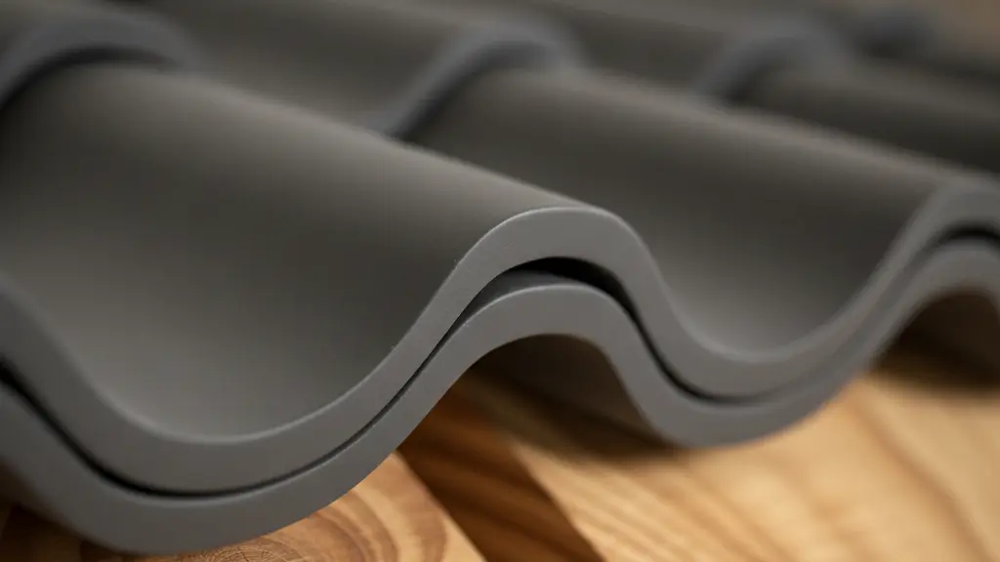

Häufig gestellte Fragen (FAQ)
Hier finden Sie schnelle und transparente Antworten auf die wichtigsten Fragen rund um unsere Leistungen.

Hier finden Sie schnelle und transparente Antworten auf die wichtigsten Fragen rund um unsere Leistungen.
Wir beraten Sie gerne persönlich und unverbindlich. Schreiben Sie uns oder rufen Sie an.
Schnelle, persönliche Antworten zu Leistungen, Terminen & Angeboten.